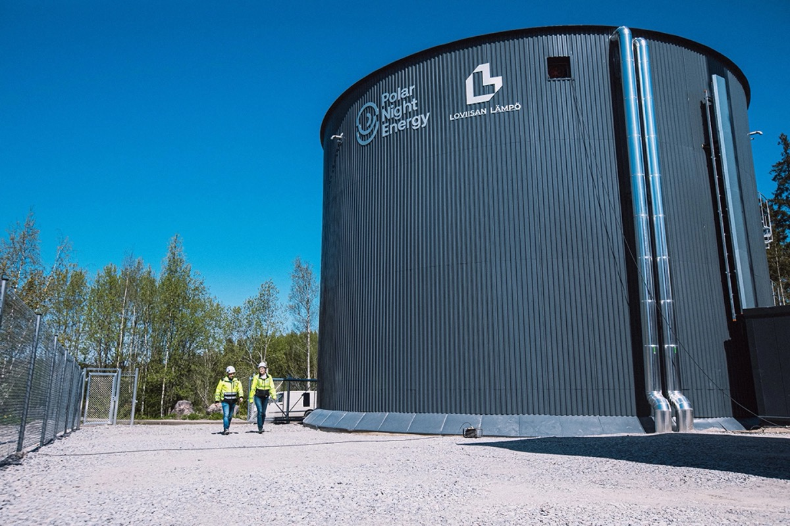

ਵਿਗਿਆਨ ਅਤੇ ਟੈਕਨੋਲੋਜੀ
ਊਰਜਾ
ਫਿਨਲੈਂਡ ਦੀ ਸੈਂਡ ਬੈਟਰੀ
ਫਿਨਲੈਂਡ ਦਾ ਇਹ ਤਜਰਬਾ ਦਰਸਾਉਂਦਾ ਹੈ ਕਿ ਕਾਰਬਨ-ਮੁਕਤ ਹੀਟਿੰਗ ਦਾ ਰਸਤਾ ਸ਼ਾਇਦ ਗਰਮ ਰੇਤ ਦੇ ਢੇਰਾਂ ਵਿੱਚੋਂ ਲੰਘਦਾ ਹੋਵੇ।

ਫਿਨਲੈਂਡ ਦੀ ਕੜਾਕੇ ਦੀ ਸਰਦੀ ਵਿੱਚ, ਜਦੋਂ ਤਾਪਮਾਨ -30°C ਤੱਕ ਡਿੱਗਦਾ ਹੈ ਅਤੇ ਸੂਰਜ ਮੁਸ਼ਕਲ ਨਾਲ ਹੀ ਚੜ੍ਹਦਾ ਹੈ, ਪੋਰਨਾਈਨ ਦੇ ਵਸਨੀਕ ਹੀਟਿੰਗ ਲਈ ਚਿੰਤਤ ਨਹੀਂ ਹੁੰਦੇ। ਉਨ੍ਹਾਂ ਦੀ ਲੋੜ ਗੈਸ ਫਰਨੇਸ ਜਾਂ ਤੇਲ ਬਾਇਲਰ ਨਾਲ ਨਹੀਂ, ਸਗੋਂ 2,000 ਟਨ ਸਾਬਸਟੋਨ ਨਾਲ ਪੂਰੀ ਹੁੰਦੀ ਹੈ, ਜਿਸਨੂੰ ਇੰਨਾ ਗਰਮ ਕੀਤਾ ਜਾਂਦਾ ਹੈ ਕਿ ਤਾਂਬਾ ਵੀ ਪਿਘਲ ਸਕੇ। ਫਿਨਲੈਂਡ ਨੇ ਹੁਣ ਦੁਨੀਆ ਦੀ ਸਭ ਤੋਂ ਵੱਡੀ ਸੈਂਡ ਬੈਟਰੀ ਚਾਲੂ ਕੀਤੀ ਹੈ, ਇੱਕ ਐਸੀ ਰੀਨਿਊਏਬਲ ਐਨਰਜੀ ਸਟੋਰੇਜ ਤਕਨੀਕ ਜੋ ਨਵੇਂ ਯੁੱਗ ਦੀ ਸ਼ੁਰੂਆਤ ਦਾ ਸੰਕੇਤ ਹੋ ਸਕਦੀ ਹੈ।
ਇਸ ਦੀ ਤਕਨੀਕ ਸਿੱਧੀ ਹੈ। ਜਦੋਂ ਰੀਨਿਊਏਬਲ ਐਨਰਜੀ ਵੱਧ ਮਾਤਰਾ ਵਿੱਚ ਉਪਲਬਧ ਹੁੰਦੀ ਹੈ, ਜਿਵੇਂ ਹਵਾ ਤੇਜ਼ ਚੱਲੇ ਜਾਂ ਗਰਮੀਆਂ ਦਾ ਸੂਰਜ ਤਿੱਖਾ ਚਮਕੇ , ਉਸ ਨਾਲ ਰੇਤ ਜਾਂ ਰੇਤ ਵਰਗੀ ਸਮੱਗਰੀ ਨੂੰ 400°C ਤੋਂ 600°C ਤੱਕ ਗਰਮ ਕੀਤਾ ਜਾਂਦਾ ਹੈ। ਇਹ ਗਰਮ ਸਮੱਗਰੀ ਇੰਸੂਲੇਟ ਕੀਤੇ ਸਿਲੋ ਵਿੱਚ ਸੰਭਾਲੀ ਜਾਂਦੀ ਹੈ, ਜੋ ਹਫ਼ਤਿਆਂ ਜਾਂ ਮਹੀਨਿਆਂ ਤੱਕ ਤਾਪ ਰੱਖ ਸਕਦੀ ਹੈ। ਜਦੋਂ ਹੀਟਿੰਗ ਦੀ ਲੋੜ ਪੈਂਦੀ ਹੈ, ਤਾਂ ਗਰਮ ਹਵਾ ਨੂੰ ਇਸ ਸਮੱਗਰੀ ਵਿੱਚੋਂ ਲੰਘਾ ਕੇ ਡਿਸਟ੍ਰਿਕਟ ਹੀਟਿੰਗ ਪ੍ਰਣਾਲੀ ਲਈ ਪਾਣੀ ਗਰਮ ਕੀਤਾ ਜਾਂਦਾ ਹੈ।
ਸੈਂਡ ਬੈਟਰੀ ਇੱਕ ਨਜ਼ਰ ਵਿੱਚ ਤਾਪ ਸ਼ਕਤੀ: 1 ਮੇਗਾਵਾਟ
ਸਟੋਰੇਜ ਸਮਰੱਥਾ: 100 ਮੇਗਾਵਾਟ-ਘੰਟੇ
ਰੇਤ ਦਾ ਤਾਪਮਾਨ: 400°C ਤੋਂ 600°C
ਸਾਬਸਟੋਨ: 2,000 ਟਨ
ਗਰਮ ਹੋਣ ਵਾਲੇ ਘਰ: 260
ਪੋਰਨਾਈਨ ਦੀ ਇਹ ਪ੍ਰਣਾਲੀ ਫਿਨਲੈਂਡ ਦੀ ਸਟਾਰਟਅਪ Polar Night Energy ਨੇ ਬਣਾਈ ਹੈ। ਇਹ 1 ਮੇਗਾਵਾਟ ਤਾਪ ਸ਼ਕਤੀ ਦੇ ਸਕਦੀ ਹੈ ਅਤੇ 100 ਮੇਗਾਵਾਟ-ਘੰਟੇ ਦੀ ਸਟੋਰੇਜ ਦੀ ਸਮਰੱਥਾ ਰੱਖਦੀ ਹੈ, ਜੋ ਸਯਾਲਾਂ ਦੀ ਵੱਧ ਲੋੜ ਵਾਲੇ ਹਫ਼ਤੇ ਵਿੱਚ 260 ਘਰ ਗਰਮ ਕਰਨ ਲਈ ਕਾਫ਼ੀ ਹੈ। ਖ਼ਾਸ ਗੱਲ ਇਹ ਹੈ ਕਿ ਇਸ ਵਿੱਚ ਸਟੋਰੇਜ ਮੀਡੀਆ ਵਜੋਂ ਸਥਾਨਕ ਚੁੱਲ੍ਹਾ ਨਿਰਮਾਤਾ ਵੱਲੋਂ ਛੱਡਿਆ ਗਿਆ ਬੇਕਾਰ ਸਾਬਸਟੋਨ ਵਰਤਿਆ ਗਿਆ ਹੈ, ਜੋ ਨਹੀਂ ਤਾਂ ਲੈਂਡਫ਼ਿਲ ਵਿੱਚ ਪਹੁੰਚਦਾ।
ਇਹ ਕੰਪਨੀ ਦੀ ਪਹਿਲੀ ਵਪਾਰਕ ਇੰਸਟਾਲੇਸ਼ਨ (Kankaanpää, 2022) ਨਾਲੋਂ ਦਸ ਗੁਣਾ ਵੱਡੀ ਹੈ। ਪੋਰਨਾਈਨ ਬੈਟਰੀ ਨਾਲ ਸ਼ਹਿਰ ਦੇ ਹੀਟਿੰਗ ਨੈੱਟਵਰਕ ਤੋਂ ਕਾਰਬਨ ਉਤਸਰਜਨ 70% ਘਟਣ ਦੀ ਉਮੀਦ ਹੈ। ਇਸ ਨਾਲ ਪੁਰਾਣੇ ਲੱਕੜ-ਚਿਪ ਪਾਵਰ ਪਲਾਂਟ ਦੀ ਜਗ੍ਹਾ ਮਿਲਦੀ ਹੈ ਅਤੇ ਪੀਕ ਮੰਗ ਪੂਰੀ ਕਰਨ ਲਈ ਤੇਲ ‘ਤੇ ਨਿਰਭਰਤਾ ਘਟਦੀ ਹੈ।
ਸੈਂਡ ਬੈਟਰੀ ਰੀਨਿਊਏਬਲ ਐਨਰਜੀ ਦੀ ਇੱਕ ਵੱਡੀ ਸਮੱਸਿਆ ਦਾ ਹੱਲ ਦਿੰਦੀ ਹੈ: ਜਦੋਂ ਹਵਾ ਤੇਜ਼ ਚੱਲ ਰਹੀ ਹੋਵੇ ਅਤੇ ਸੂਰਜ ਚਮਕ ਰਿਹਾ ਹੋਵੇ ਪਰ ਮੰਗ ਘੱਟ ਹੋਵੇ, ਤਾਂ ਬਚੀ ਬਿਜਲੀ ਨਾਲ ਕੀ ਕਰਨਾ। ਲਿਥੀਅਮ-ਆਇਓਨ ਬੈਟਰੀਆਂ ਮਹਿੰਗੀਆਂ ਹਨ ਅਤੇ ਘੰਟਿਆਂ ਦੇ ਸਟੋਰੇਜ ਲਈ ਹੀ ਚੰਗੀਆਂ ਹਨ, ਪਰ ਸੈਂਡ ਬੈਟਰੀ ਮਹੀਨਿਆਂ ਤੱਕ ਊਰਜਾ ਸੰਭਾਲ ਸਕਦੀ ਹੈ, ਸਸਤੀ, ਬਹੁਤ ਮਾਤਰਾ ਵਿੱਚ ਮਿਲਣ ਵਾਲੀ ਅਤੇ ਗੈਰ-ਜ਼ਹਿਰੀਲੀ ਸਮੱਗਰੀ ਨਾਲ।
ਇਹ ਤਰੀਕਾ ਹੀਟਿੰਗ ਨੂੰ ਮੁੜ ਬਿਜਲੀ ਵਿੱਚ ਬਦਲਣ ਦੀ ਘੱਟ-ਕਾਰਗਰ ਪ੍ਰਕਿਰਿਆ ਤੋਂ ਬਚਦਾ ਹੈ। ਇਸ ਦੀ ਬਜਾਏ, ਊਰਜਾ ਉਸੇ ਰੂਪ ਵਿੱਚ ਸੰਭਾਲੀ ਜਾਂਦੀ ਹੈ ਜਿਸ ਵਿੱਚ ਆਖ਼ਰਕਾਰ ਵਰਤੀ ਜਾਣੀ ਹੈ: ਇਮਾਰਤਾਂ ਅਤੇ ਪਾਣੀ ਨੂੰ ਗਰਮ ਕਰਨ ਲਈ। ਉੱਤਰੀ ਯੂਰਪ ਦੇ ਵੱਡੇ ਡਿਸਟ੍ਰਿਕਟ ਹੀਟਿੰਗ ਨੈੱਟਵਰਕਾਂ ਲਈ ਇਹ ਬਿਲਕੁਲ ਉਚਿਤ ਹੈ।
ਫਿਨਲੈਂਡ ਦੀ ਇਹ ਨਵੀਂ ਤਕਨੀਕ ਉਸ ਵੇਲੇ ਆਈ ਹੈ ਜਦੋਂ ਯੂਰਪ ਰੂਸੀ ਗੈਸ ਦੇ ਵਿਕਲਪ ਲੱਭ ਰਿਹਾ ਹੈ। ਡਿਸਟ੍ਰਿਕਟ ਹੀਟਿੰਗ ਪ੍ਰਣਾਲੀਆਂ, ਜੋ ਕੇਂਦਰੀ ਪਲਾਂਟ ਤੋਂ ਪੂਰੇ ਪੜੋਸ ਨੂੰ ਗਰਮ ਪਾਣੀ ਜਾਂ ਭਾਫ਼ ਪਹੁੰਚਾਉਂਦੀਆਂ ਹਨ, ਯੂਰਪ ਦੀ 13% ਆਬਾਦੀ ਨੂੰ ਸੇਵਾ ਦਿੰਦੀਆਂ ਹਨ। ਇਹ ਸੈਂਡ ਬੈਟਰੀ ਲਈ ਆਦਰਸ਼ ਜੋੜ ਹੈ, ਜੋ ਵੱਧ ਰੀਨਿਊਏਬਲ ਐਨਰਜੀ ਸੰਭਾਲ ਕੇ ਲੋੜ ਪੈਣ ‘ਤੇ ਗਰਮੀ ਵਜੋਂ ਛੱਡ ਸਕਦੀ ਹੈ।
ਇਸ ਤਕਨੀਕ ਦੀ ਖ਼ਾਸ ਗੱਲ ਇਸ ਦੀ ਸਾਦਗੀ ਹੈ। ਵੱਧ ਰੀਨਿਊਏਬਲ ਐਨਰਜੀ ਨਾਲ ਰੇਤ ਗਰਮ ਕਰੋ; ਜਦ ਲੋੜ ਹੋਵੇ, ਸਟੋਰ ਕੀਤੀ ਗਰਮੀ ਵਰਤੋ। ਫਿਨਲੈਂਡ ਵਰਗੇ ਦੇਸ਼ ਲਈ—ਜੋ ਸਦਾ ਸਾਦੇ ਅਤੇ ਮਜ਼ਬੂਤ ਹੱਲ ਲੱਭਣ ਵਿੱਚ ਅੱਗੇ ਰਹਿੰਦਾ ਹੈ—ਇਹ ਬਿਲਕੁਲ ਸੁਹਾਵਣਾ ਹੈ।
ਜਿਹੜੇ ਖੇਤਰ ਠੰਡੀ ਸਰਦੀਆਂ, ਵੱਡੇ ਡਿਸਟ੍ਰਿਕਟ ਹੀਟਿੰਗ ਨੈੱਟਵਰਕ ਅਤੇ ਰੀਨਿਊਏਬਲ ਐਨਰਜੀ ਉਤਪਾਦਨ ਵਿੱਚ ਮੌਸਮੀ ਉਤਾਰ-ਚੜ੍ਹਾਅ ਰੱਖਦੇ ਹਨ, ਉਨ੍ਹਾਂ ਲਈ ਇਹ ਵਿਕਲਪ ਬਹੁਤ ਪ੍ਰਭਾਵਸ਼ਾਲੀ ਹੋ ਸਕਦਾ ਹੈ। ਫਿਨਲੈਂਡ ਦਾ ਇਹ ਤਜਰਬਾ ਦਰਸਾਉਂਦਾ ਹੈ ਕਿ ਕਾਰਬਨ-ਮੁਕਤ ਹੀਟਿੰਗ ਦਾ ਰਸਤਾ ਸ਼ਾਇਦ ਗਰਮ ਰੇਤ ਦੇ ਢੇਰਾਂ ਵਿੱਚੋਂ ਲੰਘਦਾ ਹੋਵੇ।